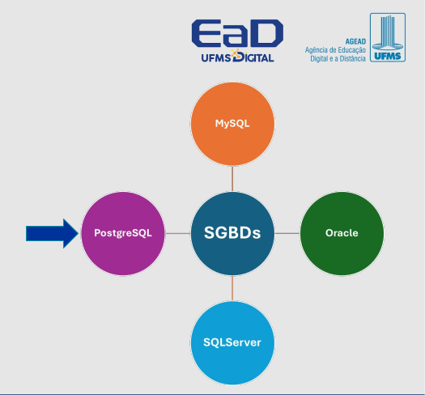
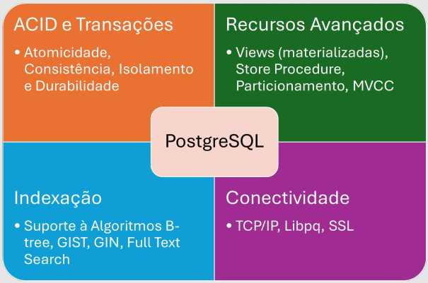
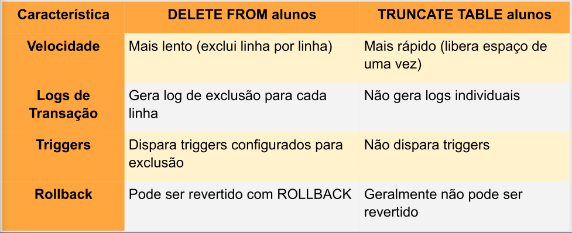

Disciplinas
LABORATÓRIO DE BANCO DE DADOS. Concluído
Materiais
[UFMS Digital] Laboratório de Banco de Dados - Módulo 1 - Unidade 1 sendProf.ª ministrante: Esteice Janaina Santos Batista.
Conteúdo
Experiência prática com sistemas de gerenciamento de banco de dados (SGBD), com foco na aplicação dos comandos SQL.
-
Instalação

PostgreSQL.

- O PostgreSQL é um Sistema de Gerenciamento de Banco de Dados Relacional (SGBDR).
- Isso significa que ele gerencia dados armazenados em tabelas.
- Embora o conceito de armazenar dados em tabelas seja comum atualmente, existem outras formas de organizar bancos de dados, como bancos de dados orientados a objetos ou NoSQL.
Tabelas.
- Em Banco de Dados utilizamos termos baseados em álgebra relacional.
- Cada tabela (relação) no PostgreSQL é uma coleção nomeada de linhas (ou tuplas).
- Todas as linhas de uma tabela compartilham o mesmo conjunto de colunas (ou atributos), que são campos nomeados e armazenam um tipo específico de dado (ex: inteiros, strings, datas, etc.).
DDL.
- A Data Definition Language (DDL) é usada para definir e modificar a estrutura do banco de dados.
- Os comandos DDL não manipulam os dados em si, mas sim os objetos que armazenam esses dados, como tabelas, índices e esquemas.
- A execução de um comando DDL geralmente resulta em uma mudança no esquema ou estrutura do banco de dados.
- Com DDL, podemos criar, alterar e remover objetos de banco de dados, como tabelas e índices.
Cenário.
- Para os exemplos a seguir, considere o cenário de um sistema de gestão acadêmica para uma universidade.
- Esse sistema será responsável por gerenciar alunos, cursos, professores e matrículas.
- A universidade precisa de um sistema que organize as informações de alunos, cursos, professores e matrículas. O sistema deve permitir:
- Alunos: Os alunos têm um número de matrícula único, nome, data de nascimento, e-mail, e podem estar matriculados em vários cursos.
- Cursos: Cada curso tem um código único, nome, descrição e carga horária.
- Professores: Os professores têm um identificador único, nome, e-mail, e podem ministrar vários cursos.
- Matrículas: Os alunos podem se matricular em diversos cursos, e cada matrícula registra o semestre e o ano em que o aluno se matriculou naquele curso.
- Alunos: Tabela alunos
- Atributos: id_aluno, nome, data_nascimento, email
- Cursos: Tabela cursos
- Atributos: id_curso, nome_curso, descrição, carga_horaria
- Professores: Tabela professores
- Atributos: id_professor, nome, email
- Matrículas: Tabela matriculas
- Atributos: id_matricula, id_aluno, id_curso, semestre, ano
Constraints.
- Constraints, ou Restrições, são regras específicas aplicadas às colunas de uma tabela, ou à tabela como um todo, para garantir a integridade e consistência dos dados.
- Essas restrições permitem um grande controle sobre os dados armazenados, garantindo que somente dados válidos sejam inseridos.
- Caso um usuário tente armazenar dados em uma coluna de forma a violar uma restrição, um erro será gerado.
Refletindo sobre restrições.
- Quais restrições teremos nas entidades e atributos apresentados para o cenário do sistema de gestão acadêmica universitária?
Criação das tabelas (relações).
DDL para criar a estrutura do banco.
CREATE TABLE alunos (
id_aluno SERIAL PRIMARY KEY,
nome VARCHAR(100) NOT NULL,
data_nascimento DATE,
email VARCHAR(100) UNIQUE
);
CREATE TABLE cursos (
id_curso SERIAL PRIMARY KEY,
nome_curso VARCHAR(100) NOT NULL,
descricao TEXT,
carga_horaria INT
);
CREATE TABLE professores (
id_professor SERIAL PRIMARY KEY,
nome VARCHAR(100) NOT NULL,
email VARCHAR(100) UNIQUE
);
CREATE TABLE matriculas (
id_matricula SERIAL PRIMARY KEY,
id_aluno INT REFERENCES alunos(id_aluno),
id_curso INT REFERENCES cursos(id_curso),
semestre VARCHAR(6),
ano INT
);
Default.
O valor DEFAULT em SQL é utilizado para definir um valor padrão que será atribuído automaticamente a uma coluna quando nenhum valor explícito for fornecido durante a inserção de um novo registro.
Isso ajuda a garantir que uma coluna tenha um valor definido mesmo quando o usuário não fornece um valor ao inserir dados.
Alterar tabela.
O comando ALTER TABLE permite modificar a estrutura de uma tabela existente, como adicionar, remover ou alterar colunas.
ALTER TABLE alunos ADD COLUMN status VARCHAR(20) DEFAULT 'ativo';
Adicionar coluna em uma tabela:
ALTER TABLE nome_da_tabela
ADD COLUMN nova_coluna tipo_de_dado;
Exemplo: Adiciona uma nova coluna telefone à tabela alunos.
ALTER TABLE alunos ADD COLUMN telefone VARCHAR(15);
Para alterar o tipo de dado de uma coluna existente, usamos ALTER TABLE com a cláusula ALTER COLUMN.
ALTER TABLE alunos
ALTER COLUMN nome
TYPE TEXT;
Esse comando altera o tipo de dado da coluna nome de VARCHAR(100) para TEXT, permitindo armazenar um volume maior de texto.
Para renomear uma coluna, usamos ALTER TABLE com a cláusula RENAME COLUMN.
ALTER TABLE alunos
RENAME COLUMN data_nascimento TO nascimento;
Esse comando renomeia a coluna data_nascimento para nascimento na tabela alunos.
Modificar o valor padrão (default) de um atributo (coluna):
ALTER TABLE alunos
ALTER COLUMN status
SET DEFAULT 'pendente';
Agora, ao inserir um aluno sem especificar o status, o valor padrão será 'pendente' em vez de 'ativo'.
Remover o valor padrão (default) de um atributo (coluna):
ALTER TABLE alunos
ALTER COLUMN status
DROP DEFAULT;
A coluna status não terá mais um valor padrão, e será obrigatório informar um valor durante as inserções, ou o valor será NULL se permitido.
Remover colunas da tabela.
Para remover uma coluna de uma tabela, usamos o comando ALTER TABLE com a cláusula DROP COLUMN.
ALTER TABLE alunos
DROP COLUMN telefone;
Exemplo: Esse comando remove a coluna telefone da tabela alunos. Todos os dados armazenados nessa coluna serão permanentemente excluídos.
Remover restrições.
No PostgreSQL, a cláusula DROP CONSTRAINT é usada para remover uma restrição (constraint) de uma tabela existente.
ALTER TABLE nome_da_tabela
DROP CONSTRAINT nome_da_restrição;
Em nome_da_restrição, você deve fornecer o nome da restrição que deseja remover.
Considere a seguinte tabela:
CREATE TABLE clientes (
id SERIAL PRIMARY KEY,
nome VARCHAR(100),
email VARCHAR(100)
);
Se você quiser remover essa chave primária, pode usar o seguinte comando:
ALTER TABLE clientes
DROP CONSTRAINT clientes_pkey;
Nota: O nome da restrição é automaticamente gerado pelo PostgreSQL quando você cria uma chave primária (geralmente no formato 'nome_da_tabela'_pkey).
DML.
A DML (Data Manipulation Language) é uma parte da linguagem SQL usada para manipular dados dentro das tabelas do banco de dados.
A DML permite que você insira, atualize, exclua e consulte os dados armazenados.
INSERT.
- O comando INSERT é usado para inserir novos dados (uma ou mais linhas/tuplas) em uma tabela específica.
- INSERT INTO nome_da_tabela (coluna1, coluna2, coluna3, ...)
- VALUES (valor1, valor2, valor3, ...);
- O INSERT especifica a ação, enquanto INTO indica o local onde esses dados serão inseridos (neste caso, uma tabela específica).
- VALUES indica que os valores fornecidos nas próximas linhas serão inseridos nas colunas correspondentes.INSERT
- Agora, vamos inserir linhas em cada uma das tabelas que criamos anteriormente para o nosso cenário do sistema de gestão acadêmica universitária.
Inserção de linhas na tabela.
INSERT INTO alunos (nome, data_nascimento, email)
VALUES
('João Silva', '1999-05-10', 'joao.silva@email.com'),
('Maria Oliveira', '2000-08-23', 'maria.oliveira@email.com'),
('Pedro Santos', '1998-12-02', 'pedro.santos@email.com'),
('Ana Costa', '1997-03-15', 'ana.costa@email.com'),
('Carlos Mendes', '2001-11-09', 'carlos.mendes@email.com');
INSERT INTO cursos (nome_curso, descricao, carga_horaria)
VALUES
('Engenharia de Software', 'Curso de engenharia focado em
desenvolvimento de software', 4000),
('Ciência da Computação', 'Curso voltado ao estudo de algoritmos e
sistemas computacionais', 3600),
('Administração', 'Curso de gestão e administração empresarial', 3000);
INSERT INTO professores (nome, email)
VALUES
('Carlos Almeida', 'c.almeida@universidade.com'),
('Mariana Souza', 'm.souza@universidade.com'),
('Paulo Ferreira', 'p.ferreira@universidade.com'),
('Fernanda Lima', 'f.lima@universidade.com'),
('Rafael Gomes', 'r.gomes@universidade.com');
INSERT INTO matriculas (id_aluno, id_curso, semestre, ano)
VALUES
(1, 1, '2024/1', 2024), -- João Silva matriculado em ES
(2, 2, '2024/1', 2024), -- Maria Oliveira matriculada em CC
(3, 3, '2024/1', 2024), -- Pedro Santos matriculado em Administração
(4, 1, '2024/1', 2024), -- Ana Costa matriculada em ES
(5, 2, '2024/1', 2024); -- Carlos Mendes matriculado em CC
O que acontece se não informar o ID da tabela na inserção?
INSERT INTO alunos (nome, data_nascimento, email)
VALUES
('Lucas Pereira', '2002-04-15', 'lucas.pereira@email.com'),
('Fernanda Alves', '2001-09-07', 'fernanda.alves@email.com');
INSERT INTO alunos (nome, data_nascimento, email)
VALUES
('Lucas Pereira', '2002-04-15', 'lucas.pereira@email.com'),
('Fernanda Alves', '2001-09-07', 'fernanda.alves@email.com');
Neste caso, como o campo id_aluno é do tipo SERIAL, ele será automaticamente incrementado pelo PostgreSQL, e os dois novos alunos serão inseridos com IDs gerados sequencialmente.
Alterar registros na tabela
O comando UPDATE é utilizado para alterar valores em uma ou mais colunas para as linhas que atendem a uma condição.
UPDATE nome_da_tabela
SET coluna1 = valor1, coluna2 = valor2
WHERE condição;
SET: Especifica as colunas que você deseja modificar e os novos valores que serão atribuídos.
WHERE: Define a condição que determina quais linhas serão atualizadas. Sem ele, todas as linhas da tabela serão modificadas.
Excluir dados na tabela.
O comando DELETE é usado para remover registros (linhas) de uma tabela que atendem a uma condição específica.
O DELETE exclui permanentemente as linhas, a menos que haja alguma proteção, como uma transação ativa que possa ser revertida.
DELETE FROM nome_da_tabela
WHERE condição;
Atenção! Sem o WHERE, todas as linhas da tabela serão removidas!Excluir dados na tabela
Neste exemplo, o registro do aluno chamado "João Silva" será removido da tabela alunos. A cláusula WHERE é utilizada para especificar qual linha deve ser excluída.
DELETE FROM alunos
WHERE nome = 'João Silva';
Truncate.
O comando TRUNCATE é utilizado para remover todas as linhas de uma tabela, mas mantendo a estrutura da tabela intacta.
Ao contrário do DELETE, que remove as linhas uma por uma e pode gerar registros de transação, o TRUNCATE é mais rápido e eficiente porque não gera logs de exclusão individual e libera o espaço de armazenamento de maneira imediata.
TRUNCATE TABLE nome_da_tabela;Truncate
Qual a diferença entre os dois comandos?
DELETE FROM alunos (sem usar o where)
TRUNCATE TABLE nome_da_tabela;Truncate
O DELETE é mais lento porque executa a exclusão de cada linha individualmente, e cada exclusão gera registros de log no sistema de transações.
O TRUNCATE libera o espaço de armazenamento de todas as linhas de uma só vez.
